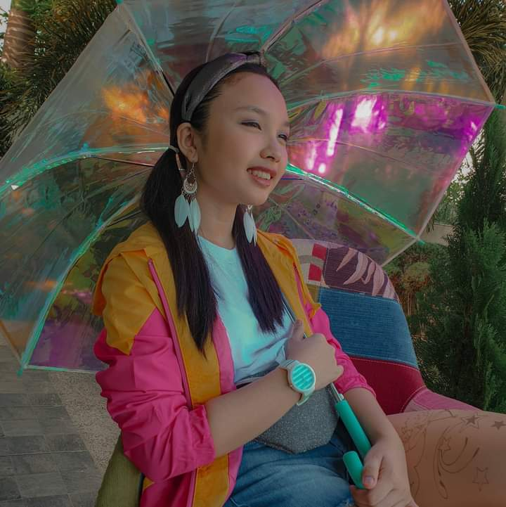

Get To Know Me
Hi there! I'm Gabrielle Frances Malong. You can call me Gabby, if you'd like. All The Nice Things is a magazine website created by me so that I could share my interests with other people. I like to listen to a good variety of music, but I'm mostly interested on K-pop. This includes BlackPink, BTS, Twice, Itzy, Mamamoo and so many more. I also love appreciating nature! I rarely get out of the house now because of the pandemic so I always appreciate the environment as much as I can. It's also calming for me to be away from my gadgets for a while. I am a TOTAL food lover. I enjoy as much food as I can whenever my parents order takeout such as McDonalds or Japanese food. My favorite food would definitely be any shrimp dish. I do love shellfish. I have a long list of things that catch my attention, but don't worry as I have already summarized everything for an easy read. I hope you enjoy!